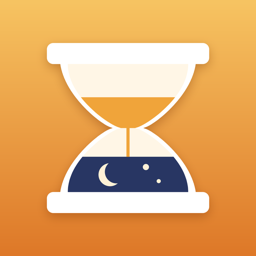

Maine learner's permit: driving hours
70 hours of supervised driving
10 hours at night
6 months holding the permit
Maine teens need 70 hours of supervised practice, including 10 at night, and at least 6 months with the learner's permit before the road test. Enter what's done so far to see what's left and the weekly pace to be ready on time.
Logging every drive by hand is where hours get lost. Hourglass times each drive with one tap, counts night hours from real sunset and sunrise, and exports a clean PDF log to sign. On iPhone, no account, no ads.
Get HourglassHow many hours do you need to drive with a learner's permit in Maine?
Maine asks for 70 hours of supervised driving, 10 of them at night, and at least 6 months holding the permit before the road test.
How many hours a week is that?
Spread over 6 months, 70 hours is about 2.7 hours a week. The calculator above adjusts the pace to the hours already driven and your test date.
What counts as night driving?
Driving between sunset and sunrise. Hourglass counts it automatically from the real sunset and sunrise where each drive starts.
Where do I check the official Maine rules?
On the Maine DMV (or Department of Public Safety) website. Requirements change, and some states lower the hours after driver education.
Requirements as published in 2026 (IIHS graduated licensing table). Always confirm on the official Maine website. Hourglass is a log book, not legal advice.
Other states
All states · Alabama · Alaska · Arizona · Arkansas · California · Colorado · Connecticut · Delaware · District of Columbia · Florida · Georgia · Hawaii · Idaho · Illinois · Indiana · Iowa · Kansas · Kentucky · Louisiana · Maryland · Massachusetts · Michigan · Minnesota · Mississippi · Missouri · Montana · Nebraska · Nevada · New Hampshire · New Jersey · New Mexico · New York · North Carolina · North Dakota · Ohio · Oklahoma · Oregon · Pennsylvania · Rhode Island · South Carolina · South Dakota · Tennessee · Texas · Utah · Vermont · Virginia · Washington · West Virginia · Wisconsin · Wyoming